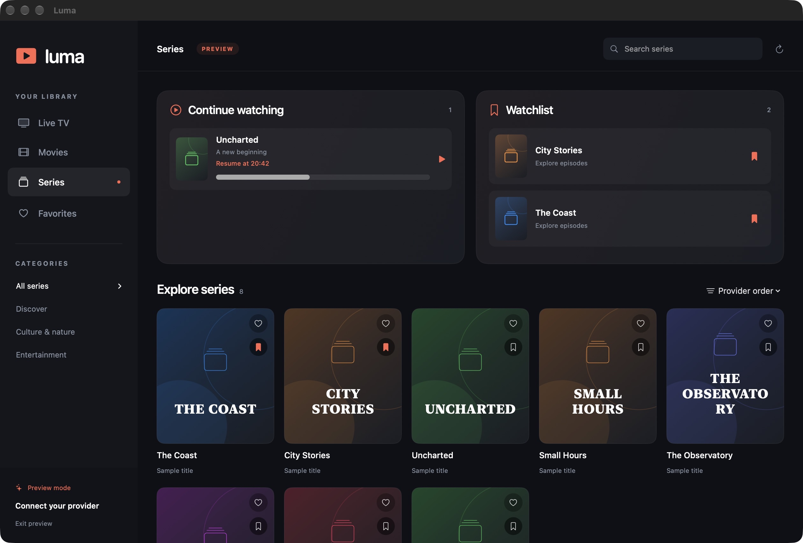

Pick up where you left off.
Continue watching remembers your place in a movie or episode. When the credits approach, Play next keeps your evening going.
MADE FOR MAC · BUILT FOR YOUR LIBRARY
Live TV, movies and one more episode.
A beautiful home for the content you already love.
Free download · Apple silicon · macOS 14 or later

SETTLE IN
Your provider’s library, with the little things
that make it feel like yours.
Continue watching remembers your place in a movie or episode. When the credits approach, Play next keeps your evening going.
Keep a Watchlist alongside Continue watching. Bookmark a title now, find it right at the top of your library later.
Choose a subtitle or audio track. Fine-tune subtitle size, color, background, timing and position until everything feels right.
The playback engine is included. No separate VLC install or extra tools. Connect your Xtream Codes account and explore your library.
YOUR NEXT WATCH STARTS HERE
Luma 0.7.0 for Mac · Early release
A QUICK START
Luma is a player. Bring your own
authorized TV subscription.
Download and open the ZIP, then drag Luma to your Applications folder.
This early release isn’t Apple-notarized, so macOS may block the first launch. After trying to open Luma, use System Settings → Privacy & Security → Open Anyway if you trust this download.
Apple’s guide to opening apps ↗Enter the server address, username and password from your Xtream Codes provider. Luma brings your live channels, movies and series together.
GOOD TO KNOW
No. Luma plays content from your own provider. You’ll need a working Xtream Codes account and permission to access the content you watch.
No extra player or playback tools are needed. Luma includes its playback engine. You just need a supported Mac, an internet connection and your provider account.
Luma supports 4K playback and lets you select available audio and subtitle tracks. Availability, picture quality and smooth playback depend on your provider’s stream, your connection and your Mac. A quality selector appears when the stream offers selectable variants.
If you choose to remember your login, Luma stores it in your Mac’s Keychain. Watch history, Watchlist and preferences stay on your Mac. Luma connects directly to your provider to retrieve and play your content. Read the privacy information for more details.
Download the latest release here and replace the app in Applications. To report a problem, open a GitHub issue. Please leave passwords and provider login links out of public reports.